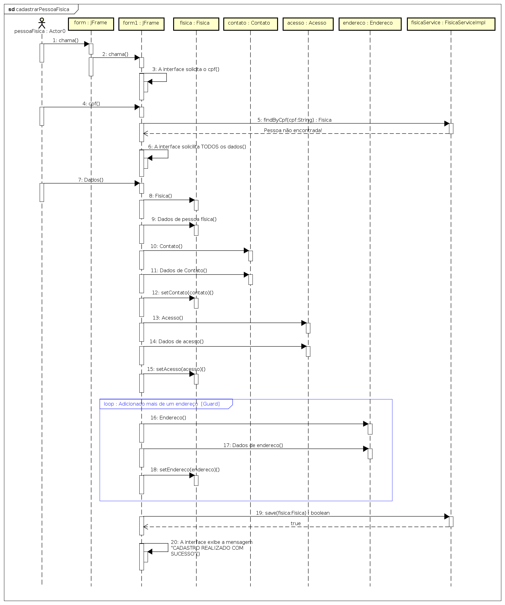

Desenvolvendo aplicações Java com a API JDBC
GRUPO: 0
- Frank José Affonso
- José Affonso
- José Frank
Pré-requisitos
Objetivo
O objetivo principal deste tutorial é apresentar aos alunos do BCC Unesp (Integral e Noturno) como a API JDBC (do inglês, Java Database Connectivity) pode ser utilizada na construção de aplicações que envolvem banco de dados. Este tutorial visa também mostrar como a IDE Netbeans 11.3 pode facilitar esse tipo de desenvolvimento.
Como objetivo secundário, porém não menos importante, este tutorial visa auxiliar os alunos de ambas as turmas na elaboração desse tipo de documento (TUTORIAL).
O que é a API JDBC?
Esta é uma API Java que permite acessar qualquer tipo de dados tabulares, especialmente dados armazenados em um banco de dados relacional. A API JDBC auxilia na construção de aplicativos Java que gerenciam essas três atividades de programação:
- Conexão a uma fonte de dados (ou seja, um banco de dados)
- Enviar consultas e atualizar instruções para o banco de dados
- Recuperação e processamento de resultados recebidos do banco de dados em resposta a algum tipo de consulta
Apresentando o Exemplo: Diagrama de Classe e Mapeamento
Para mostrar a funcionalidade da API JDBC no desenvolvimento de uma aplicação Java, o gerenciamento de uma entidade cliente será considerado. Veja a especificação abaixo:
O sistema deve permitir a inclusão, alteração e remoção de clientes do sistema TUTORIAL-COM-JDBC com os seguintes atributos: nome, endereço (rua, número, bairro, cep, cidade, estado), contato (telefone residencial, telefone comercial, celular, e-mail), cpf (para pessoa física), data de nascimento e cnpj (para pessoa jurídica). Um cliente pode ter mais de um endereço para correspondência. Um cliente tem apenas um contato.
Com base na especificação apresentada, o seguinte diagrama de classes foi elaborado:

Como a ideia aqui é utilizar a API JDBC, os conceitos apresentados nas VIDEOAULAS 4 e 5 serão utilizados para mapear o modelo de classe para o modelo relacional. De acordo com as regras de mapeamento, o desenvolvedor pode optar pela solução que lhe for mais conveniente ao sistema de software que está sendo desenvolvido. Nesse sentido, observe as soluções geradas (a) e (b).
As soluções apresentados ilustram as possibilidades de mapeamento para o modelo (diagrama de classes). A solução (a) mostra um mapeamento fiel ao modelo, sendo criada uma entidade para cada classe. Já a solução (b) agrupa um conjunto de classe em apena uma entidade. Agora eis a questão…
Qual solução adotar?
RESPOSTA: Depende!
Depende da hierarquia de herança do sistema. Sistemas com níveis de hierarquias complexas (por exemplo, vários níveis, maior número de atributos) podem utilizar a solução (a) para evitar que muitas linhas com dados nulos sejam criados. Outro ponto que se deve levar em consideração é a consulta que deve ser realizada quando uma entidade é mapeada para o modelo de classes.
Embora mais complexa, a solução (a) será adotada neste tutorial. O objetivo é mostrar a codificação desse tipo de entidade.
Aplicando o padrão DAO
Antes de iniciar a implementação dessa aplicação, vamos apresentar o modelo com a aplicação do padrão DAO (Veja a VIDEOAULA 4). Observe a figura abaixo:
Esse diagrama segue a mesma organização do modelo (ESTILO ARQUITETURAL EM CAMADAS) apresentado na VIDEOAULA 5.
- O pacote
modelcontém as classes lógicas do sistema para a entidade cliente. - O pacote
daocontém as classes de persistência, conforme padrão apresentado na VIDEOAULA 4. - O pacote
utilspossui uma classe e uma interface, cujo objetivo é prover uma conexão do banco de dados MySQL para cada classe do pacote dao. - O pacote
servicecontém as classes que fazem intermédio entre a camada de aplicação e a camada dao.
Vamos agora modelar um diagrama de sequência para a funcionalidade “Cadastrar Pessoa Física”. Para isso, vamos considerar uma interface principal (form) e uma interface específica de cadastro (form1). Assim veja na figura abaixo como ficou a sequência de mensagens na linha do tempo.
Sobre os digramas, duas considerações devem ser destacadas:
- A interação entre os objetos do modelo (Passo 8 a 18). O objeto
fisicacriado na linha 8 recebe por meio do métodosetos objetosacesso,contatoeendereco(Passos 12, 15 e 18, respectivamente). - O loop criado para que vários objetos endereços possam ser atribuídos ao objeto
fisica(Passo 16 a 18).
Implementação: dando "vida" aos diagramas
Antes de iniciar a implementação do projeto, você deve criar um database de nome
jdbctutorial no MySQLWorkbench. Caso tenha dúvidas nesse passo, assista a VIDEOAULA
que está no TÓPICO 5 no Google Classroom.
Agora vamos criar um projeto Java Maven chamado JDBCTutorial. Veja a figura abaixo:
Em seguida, vamos adicionar o driver JDBC para o banco de dados Mysql. Após fazer isso, o
arquivo pom.xml deve ficar da seguinte maneira:
Implementando a camada utils
Inicialmente vamos criar uma interface chamada IMySQL com as constantes
de configuração da conexão com o banco de dados MySQL. Veja o código na listagem abaixo:
Agora vamos criar a classe responsável criar uma conexão com o banco de dados e
entregar para as classes da camada dao. A listagem abaixo mostra o
código da classe FabricaConexao.java:
OBSERVAÇÃO: Veja os comentários no código sobre os principais comandos.
Veja também que o método fechar foi sobrecarregado para lidar com os objetos
que manipulam as conexões.
Implementando a camada model
Agora vamos escrever as classes da camada model. Basicamente, essas classes
possuem atributos, construtores, os métodos de acesso (getters e setters) e o método
toString. Veja a nova estrutura do projeto com as novas classes:
Para que este tutorial não fique tão longo, apenas o código fonte da classe Pessoa.java
será exibido abaixo. Os demais podem ser visualizado no projeto completo que está disponível no final deste documento.
Implementando a camada dao
Conforme apresentado no modelo UML, o pacote dao possui as classes responsáveis
pela persistência dos objetos da camada model. Nesse sentido, vamos começar pela
interface FisicaDAO.java. Veja a listagem abaixo:
Nessa listagem são estão declaradas as String SQL para inserção de uma pessoa física
(INSERT_PESSOA, INSERT_FISICA) e consulta de uma pessoa física pelo cpf (FIND_BY_CPF).
Além disso, também são apresentadas as assinaturas das operações salvar (save) e localizar uma pessoa física pelo cpf (save).
Sobre a String SQL FIND_BY_CPF, pessoa_fisica não é uma tabela no banco de dados. Para
facilitar a operação de consulta, uma view elaborada por meio do seguinte comando:
Agora vamos trabalhar na implementação da classe FisicaDAOImpl.java, a qual deve
OBRIGATORIAMENTE implementar as assinaturas da interface como métodos da classe. Veja a listagem
abaixo:
OBSERVAÇÃO: Observe os comentários das listagem para descrição do funcionamento dos principais comandos.
Como pode-se observar no método salvar, chamadas de outras classes DAO
são realizadas para persistir os objetos de sua entidade. Além disso, vale destacar o
controle transacional implementado pelas instruções con.setAutoCommit(false); e
con.commit();.
O controle de transação depende da implementação correta das exceções. Para isso, vamos apresentar
a listagem da interface ContatoDAO.java ContatoDAOImpl.java, respectivamente.
Veja que o comando try-catch lança uma exceção (throw new
SQLException(this.getClass().getName() + " - Problemas no PreparedStatement!\n" +
ex.getMessage());) para a classe que fez a chamada (no nosso caso a classe
FisicaDAOImpl) quando uma exceção ocorrer.
Para encerrar a apresentação dessa camada, vamos criar agora a classe que representa o "ponto
de acesso" para APENAS as classes que DEVE ser disponibilizadas. A listagem abaixo mostra a
implementação da classe DaoFactory.java:
IMPORTANTE: Veja que essa classe somente disponibiliza, por meio de um método, a implementação de
FisicaDAOImpl. As demais classes DAO, que se referem às classe Acesso, Contato
e Endereco, não são apresentadas por motivo de escopo. Em outras palavras, essa camada deve
disponibilizar apenas o necessário para a camada service.
Implementando a camada service
A camada service possui algumas semelhanças em relação a camada dao. Essas
semelhanças podem ser resumidas na presença de interface e classe de implementação, como nas classes
DAO. A listagem abaixo mostra o código da interface FisicaService:
IMPORTANTE: Essa interface implementa os métodos que serão acessados pela interface da aplicação.
Agora vamos mostrar a implementação da classe FisicaServiceImpl.java, que implementa
a interface FisicaService. O atributo FisicaDAO fisicaDao; foi injetado
para que essa classe possa manipular (ou seja, cadastrar, alterar, excluir e consultar) os dados da
entidade que manipulam no banco de dados.
Por fim, vamos apresentar agora a implementação da classe ServiceFactory.java, que, assim como
a classe DaoFactory.java, representa o "ponto de interação" dos objetos externos como esta camada.
Implementando a interface
Para finalizar este tutorial, vamos mostrar a classe Demo.java, que representa a
interface do nosso sistema. Veja a listagem abaixo:
Como pode-se observar nessa listagem, a classe Demo.java tem acesso
apenas a camada service, pois somente as classes dessa camada estão
presentes nesse código.
Para finalizar, observe na listagem da classe Demo.java que o comando
Fisica fisica = InstanceGenerator.getPessoaFisica(cpf, username); permite
gerar um objeto da classe Fisica. Note que apenas os dados que necessitam
de unicidade do banco de dados são passado como parâmetros (cpf, username).
A listagem abaixo mostra o código fonte da classe InstanceGenerator.java:
Executando...
Após executar o programa temos os dados inseridos no banco de dados...
Como pode-se observar, os dados foram inseridos corretamente nas respectivas entidades, respeitando os relacionamentos apresentado no modelo orientado a objeto (diagrama de classes).
Bem, é isso! Até a próxima!